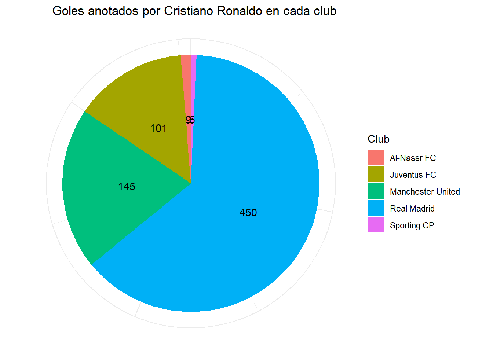
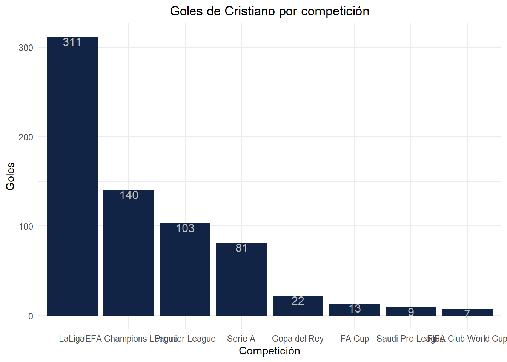
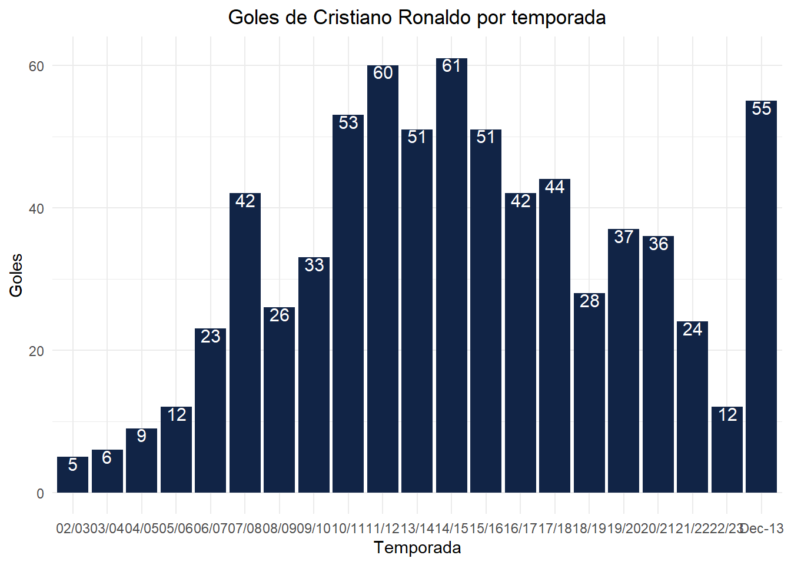
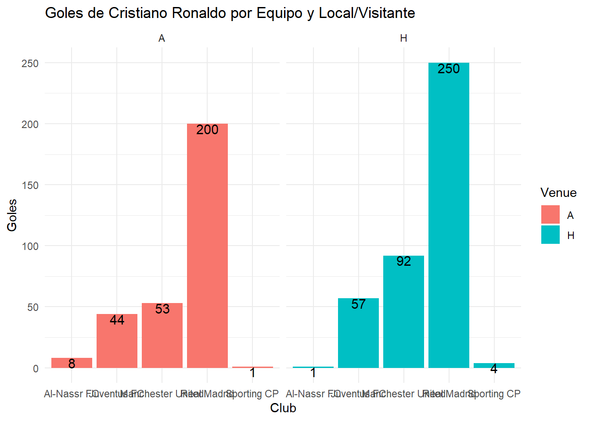
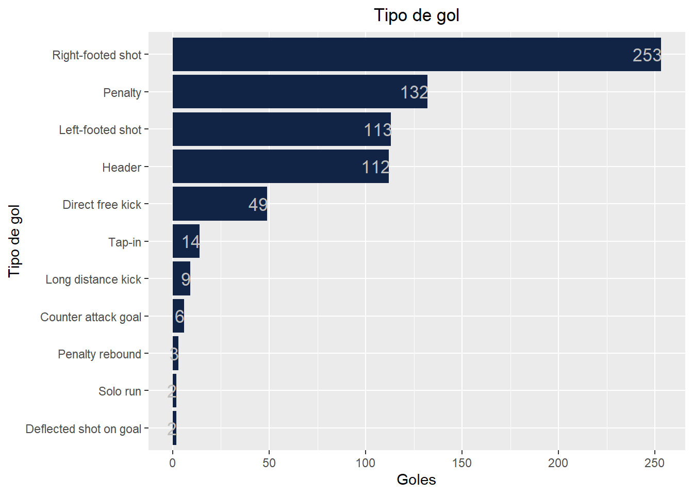
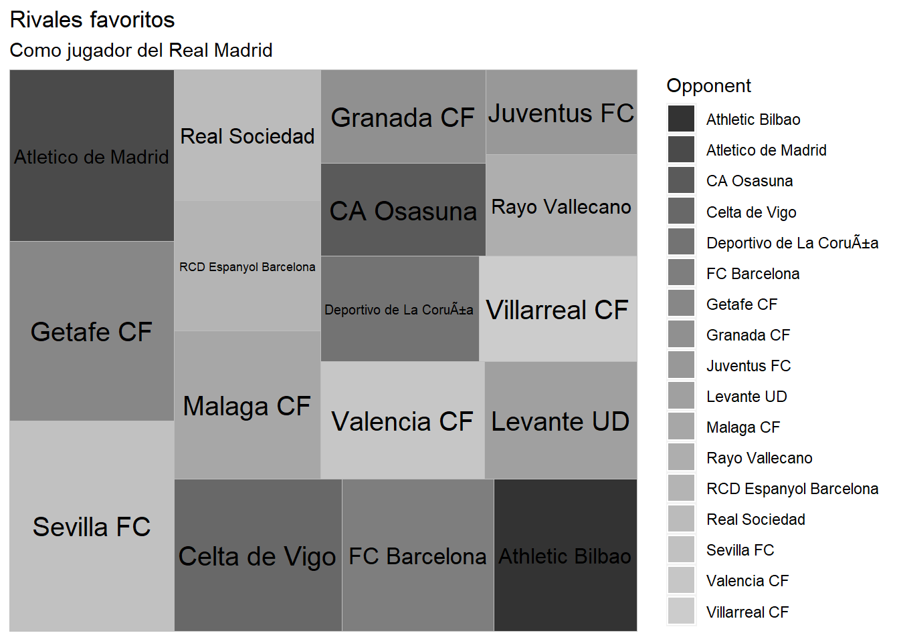

Introducción
Cristiano Ronaldo es, para algunos, el mejor jugador de la historia. Sin embargo, algo que podemos asegurar en base a datos es que se sí se trata del máximo goleador de la historia del fútbol ya que con un total de 710 goles (y aumentando) se coloca en primer lugar de esta clasificación llevandolo así a conseguir 5 balones de oro, 5 Champions League y 2 botas de oro, entre otros muchos.
En primer lugar, explicaremos la estructura del trabajo y el orden del analisis estadísitico que realizaremos del jugador.
Lo primero a destacar será analizar los goles en cada club que el jugador ha estado observando las grandes diferencias entre estos.
En segundo lugar, realizaremos una gráfico en la que se podrá observar el número de goles de Cristiano en cada competición. Además, para produndizar en el tema, también haremos una tabla que muestre el club con el que anotó los tantos en cada competición.
En tercer lugar, explicaremos los goles anotados por el futbolista en cada temporada de su carrera, empezando en la temporada 2002/2003 hasta la actualidad.
En cuarto lugar, mencionaremos y analizaremos si los tantos anotados por el futbolista fueron jugando como local o como visitante observando así si hay diferencias entre jugar junto a su afición o no en cada club en el que ha estado.
En penúltimo lugar, distinguiremos la forma de marcar los goles puesto que no todo son de la misma manera ni con la misma parte del cuerpo.
Por último, y centrándonos en la liga española en su etapa por el Real Madrid, observaremos sus principales “víctimas” a las cuáles les ha marcado un mayor número de goles.
Datos del trabajo
La base de datos utilizada en el trabajo ha sido obtenida en su 100% de la página web de base de datos Kaggle.
Código R utilizado
Goles por cada club
Druante los más de 20 años de carrera futbolística, Cristiano Ronaldo ha jugado en solamente 5 clubes. Destaca sobre todo su paso por el Real Madrid donde consiguió el mayor número de logros de su carrera destacando en especial los 4 Balones de Oro y las 4 Champions League conseguidas con el equipo madridista. De esta manera, analizaremos el total de goles anotados en cada club en el que estuvo aunque cabe destacar que no en todos los clubes ha estado el mismo tiempo ya que en el Real Madrid estuvo 9 temporadas mientras que en el Manchester United estuvo 7, 3 en la Juventus y un año solamente tanto en el Sporting de Portugal como en el Al Nassr.
Código
df <- datos %>% select(Goles, Club)
total_goles <- aggregate(Goles ~ Club, data = df, FUN = sum)
grafico <- ggplot(total_goles, aes(x = "", y = Goles, fill = Club)) +
geom_bar(stat = "identity", width = 1) +
geom_text(aes(label = Goles), position = position_stack(vjust = 0.5), color = "black") +
coord_polar("y", start = 0) +
labs(title = "Goles anotados por Cristiano Ronaldo en cada club",
fill = "Club",
x = NULL,
y = NULL) +
theme_minimal() +
theme(legend.position = "right",
axis.text = element_blank(),
axis.title = element_blank(),
plot.title = element_text(hjust = 0.6))
grafico
Goles por competición y club
A continuación, analizaremos de una forma más general las goles anotados por Cristiano en cada competición para posteriormente concretar aún más estadísticas como en que club se han anotado esos goles. Cabe destacar que en el primer análisis, más general, se ha extraído de la tabla por motivos estéticos ciertas competiciones donde el jugador no ha tenido unas estadísiticas muy positivas debido al escaso número de goles. Estas competiciones son la Champions League Qualifying donde Cristiano solamente anotó 1 tanto seguido de la Europa League, la Taca de Portugal Placard y la UEFA Super Cup con 2 tantos, la Liga Portugal con 3 y, por último, la Supercopa, la EFL Cup y la Italy Cup con 4.
Código
goles_compet <- datos %>% select(Goles, Competition)
total_goles3 <- aggregate(Goles ~ Competition, data = goles_compet, FUN = sum)
goles_por_competicion <- total_goles3 %>%
filter(!(Competition %in% c("Liga Portugal", "Taca de Portugal Placard", "UEFA Champions League Qualifying",
"UEFA Super Cup", "Supercoppa Italiana", "Europa League", "Italy Cup", "Supercopa", "EFL Cup"))) %>%
ggplot() +
aes(x = reorder(Competition, -Goles), y = Goles)+
geom_col(fill = "#112446") +
labs(x = "Competición",
y = "Goles", title = "Goles de Cristiano por competición") +
theme_minimal()+
theme(plot.title = element_text(hjust = 0.5))+
geom_text(aes(label = Goles), vjust=0.99,hjust=0.49, color="grey",
position = position_dodge(0.1), size=4.0)
goles_por_competicion
Goles por temporada
La carrera de Ronaldo fue en aumento debido tanto a su madurez futbolísitca como a los compañeros que le rodeaban, reflejándose así en sus estadísticas goleadoras. De esta manera, en el siguiente gráfico observaremos como ha sido su evolución de manera positiva hasta que abandonó el Real Madrid. Posteriormente a este “cambio de aires” sus estadísitcas disminuyeron debido a diversos factores como la edad, el equipo, la posición o los minutos jugados. En cuanto al gráfico, cabe destacar que debido a un error en el fichero proporcionado por Kaggle, la temporada nombrada como “Dec-13” se refiere a la temporada 12/13 por lo que a pesar de situarse al final, debería situarse por el medio registrando así una de sus mejores temporadas jugando en el conjunto del Santiago Bernabeu
Código
golesporaño <- datos %>% select(Goles, Season)
goles_totales_por_año <- aggregate(Goles ~ Season, data = golesporaño, FUN = sum)
grafico_goles_año <- ggplot(data = goles_totales_por_año) +
aes(x = Season, y = Goles) +
geom_col(fill = "#112446") +
labs(x = "Temporada", y = "Goles", title = "Goles de Cristiano Ronaldo por temporada") +
theme_minimal() +
theme(plot.title = element_text(hjust = 0.5)) +
geom_text(aes(label = Goles), vjust=0.99,hjust=0.49, color="white",
position = position_dodge(0.1), size=4.0)
grafico_goles_año
Goles como local y visitante
Por lo que respecta a la comparación entre los goles anotados jugando como local y aquellos anotados como visitante, cabe destacar que la A(Away) quiere decir que jugó como visitante y la H(Home) quiere decir que jugó como local. De esta manera se puede apreciar que en prácticamente todos los equipos, exceptuando su etapa actual en el Al Nassr, consigue anotar un mayor número de goles en los partidos jugados como local por lo que concluimos con que jugar junto a su afición le ha servido de impulso en su carrera anotando un total de 404 goles de local mientras que de visitante marcó “solamente” 306. A pesar de ello, Cristiano es un futbolista que, como vemos en los datos, no le teme a jugar en el estadio rival y siempre deja huella en el estadio al que va.
Cabe destacar que el orden en el gráfico en el caso de que no pueda leerlo debido a los nombres largos de los Clubes es el Al Nassr, seguido de la Juventus, el Manchester United, el Real Madrid y por último, el Sporting de Portugal
Código
Local_Visitante <- datos %>% select(Goles, Club, Venue)
datos_local_visitante <- Local_Visitante %>%
group_by(Club, Venue) %>%
summarise(Total_Goles = sum(Goles), .groups = "drop")
grafico3 <- ggplot(datos_local_visitante, aes(x = Club, y = Total_Goles, fill = Venue)) +
geom_bar(stat = "identity") +
facet_wrap(~ Venue) +
labs(title = "Goles de Cristiano Ronaldo por Equipo y Local/Visitante",
x = "Club",
y = "Goles") +
theme_minimal()+
geom_text(aes(label = Total_Goles), vjust=0.99,hjust=0.49, color="black",
position = position_dodge(0.1), size=4.0)
grafico3
Tipo de goles
Si por algo se ha caracterizado Cristiano a lo largo de su carrera ha sido por no tener un único tipo de gol sino que sus goles han sido de diferentes formas, con diferentes partes del cuerpo o en diferentes situaciones del partido. A pesar de ello, puesto que el pie dominante del jugador es la derecha, situamos en primer lugar en el ranking los goles con su pierna derecha con un total de 253. Otro dato a destacar es que ROnaldo siempre ha sido etiquietado como uno de los mejores cabeceadores, dato el cual se ve reflejado en las estadísticas con un total de 112 goles de cabeza. Además, allá donde fuese, siempre era líder, capitán y el encargado de librar los libres directos y los penaltis de manera que un alto porcentaje, alrededor del 20%, han sido anotaciones desde los 11 metros.
Cabe destacar que el total de goles del gráfico solamente alcanza los 695 goles puesto que en el fichero de datos eran 15 los goles que no tenían un tipo de gol adjudicado.
Código
tipo_gol <- datos %>% select(Goles, Type)
tipo_gol2 <- tipo_gol %>% filter(!is.na(Type) & Type != "")
tipo_gol3 <- aggregate(Goles ~ Type, data = tipo_gol2, FUN = sum)
grafico_tipo_gol <- ggplot(tipo_gol3) +
aes(x = reorder(Type, +Goles), y = Goles) + geom_col(fill = "#112446") +
labs(
x = "Tipo de gol",
y = "Goles",
title = "Tipo de gol") +
theme(plot.title = element_text(hjust = 0.5))+
geom_text(aes(label= Goles), vjust=0.49,hjust=0.95, color= "grey",
position = position_dodge(0.1), size=4.6) +
coord_flip()
grafico_tipo_gol
Rivales favoritos en su época en el Real Madrid
A cualquier persona que le preguntes que se haga una imagen mental de Cristiano Ronaldo, será con la camiseta del Real Madrid puesto que fue ahí donde más años estuvo (9) y donde más logros alcanzó. Ahora nos centraremos en su época como jugador del conjunto blanco y analizaremos sus rivales favoritos, es decir, aquellos a quienes les marcó una mayor cantidad de tantos en todas las competiciones. Con este análisis se busca en parte resolver algunas críticas recibidas por el futbolista portugués que afirmaban que la gran cantidad de goles anotados en su carrera era debido a que “se aprovechaba” de los equipos pequeños para aumentar las estadísiticas y que, en cambio, contra los equipos grandes no hacía nada. De esta manera, observamos que 4 de los 6 equipos que lideran el ranking se tratan de equipos grandes puesto que solamente el Getafe (23 goles) y el Celta (20 goles) no son considerados equipos existosos. Por tanto, de estos 4 equipos, su rival favorito es el Sevilla (27 goles) seguido del Atletico de Madird (22 goles), FC Barcelona (18 goles) y Athletic Club de Bilbao (17 goles).
Código
rivales <- subset(datos, Club == "Real Madrid" & Goles > 0)
rivales_favoritos <- rivales %>% select(Opponent, Goles)
rivales_fav <- aggregate(Goles ~ Opponent, data = rivales_favoritos, FUN = sum)
rivales_fav2 <- head(arrange(rivales_fav, desc(Goles)), 17)
grafico_rivales <- ggplot(rivales_fav2) +
aes(area = Goles,fill = Opponent, label = Opponent) +
geom_treemap() +
geom_treemap_text(colour = "black",
place = "centre",
size = 15) +
scale_fill_grey() +
labs(title = "Rivales favoritos",
subtitle = "Como jugador del Real Madrid")
grafico_rivales
Conclusión
Para finalizar con este análisis cuantitativo de la carrera de Cristiano Ronaldo, destacamos que estamos hablando del máximo goleador de la historia de un deporte como el fútbol lo que lo sitúa en uno de los mejores jugadores de la historia. Además, observamos su rápida madurez futbolísitca ya que en sus primeros años de carrera alcanzó a conseguir datos al alcance de muy pocos. Asímismo, observamos que tiene un impacto muy grande en cualquier club que vaya destacando sobre todo su paso por el Real Madrid. Para concluir, recalcamos que el futbolista, a sus 38 de edad, sigue registrando datos bastante impactantes y vemos como su registro goleador sigue en continuo aumento.
Bibliografía
Como se ha mencionado en el apartado de los datos obtenidos, la principal fuente de información que hemos utilizado es:
Kaggle , y para obtener la fuente de datos: Cristiano Ronaldo